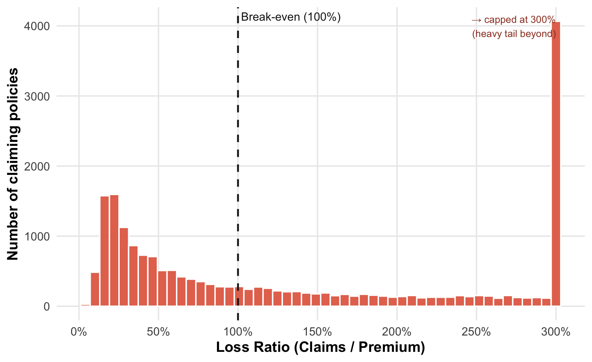
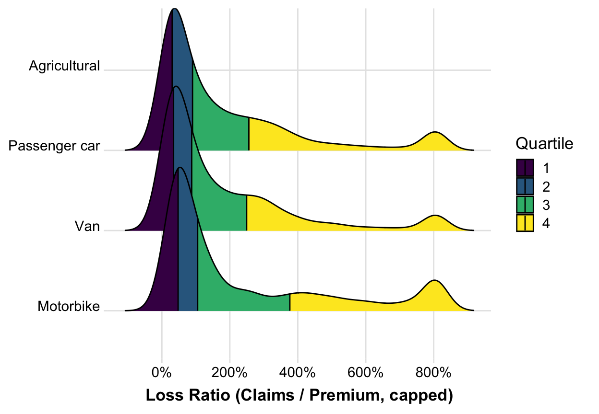
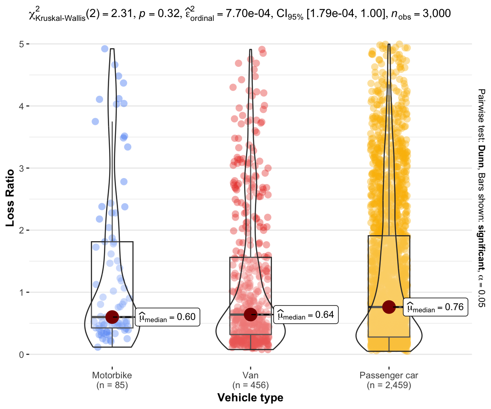
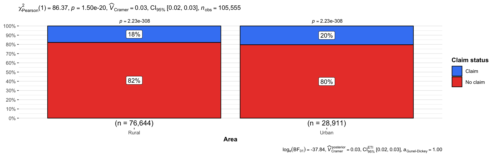
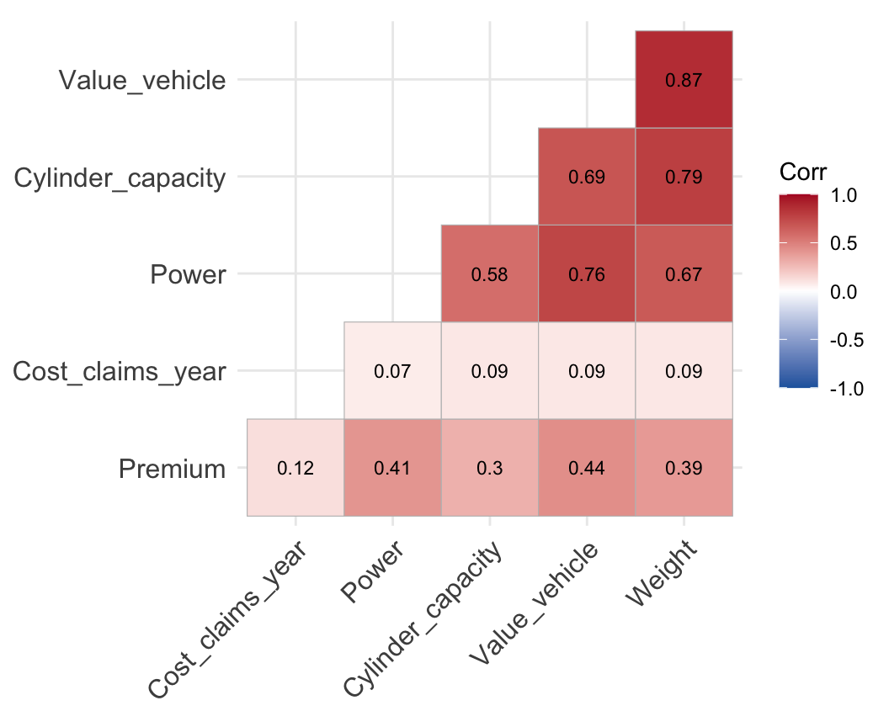
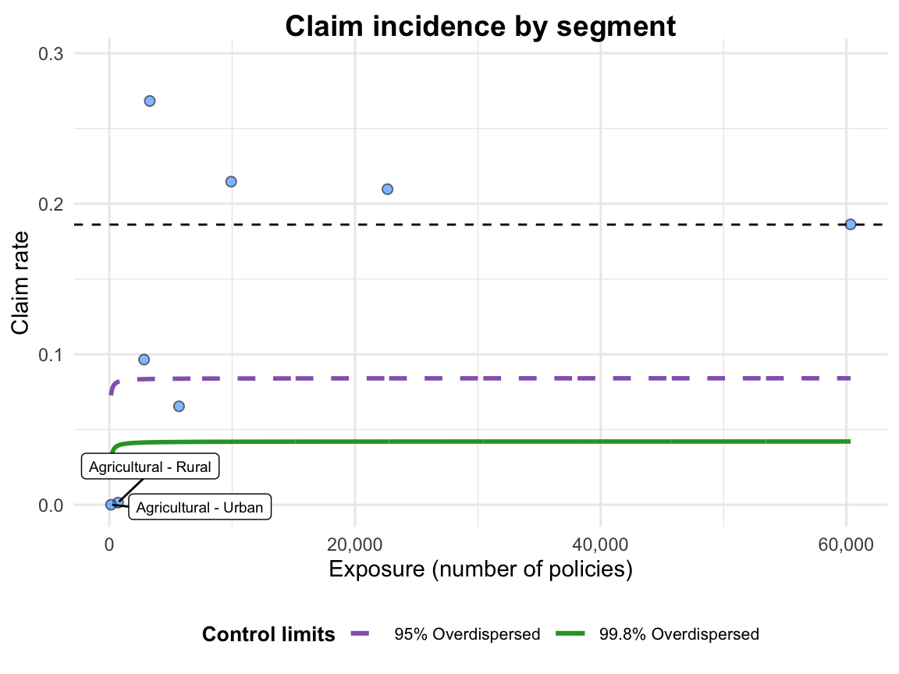
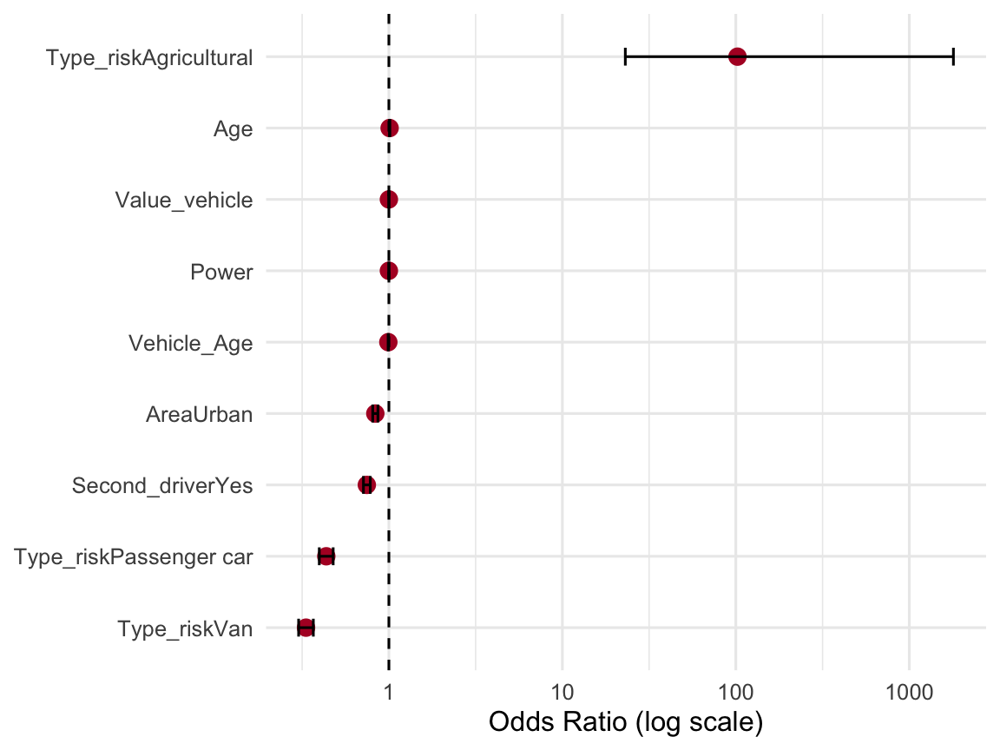

A Visual Analytics Study of a Motor Insurance Portfolio
2026-05-21
“Insurers often carry underperforming portfolios where the root causes of poor profitability and high volatility are unknown.”
This study interrogates a real-world Spanish motor insurance portfolio to find those root causes — and to prove them statistically, not by intuition.
105,555
policy-year records · 30 variables · Spain, 2015–2018

How to read it
Each bar = policies at that loss level. The dashed line is break-even — left of it, the policy made money; right of it, claims beat premium.
The bulk sits left of break-even, but a long right tail keeps going well past 300%.
81% of policies never claim · among claimers, most stay below break-even · a heavy tail runs at a technical loss → profitability lives in the tail, not the average
::::


p = 0.32
Kruskal-Wallis · not significant
The ridgelines looked different — but the medians barely move: 0.60 · 0.64 · 0.76.
Vehicle type does not drive claim severity.
So the structure must lie in frequency — who files a claim, not how much.

Statistically significant
χ² = 86.4, p = 1.5e-20
A textbook “highly significant” result.
Practically negligible
Cramer’s V = 0.03 · gap is only 18% vs 20%
The association is essentially zero.
Why? Sample size.
With 105,555 rows, even trivial gaps cross the significance line.
→ Effect size matters, not just the p-value.


A funnel plot object with 8 points of which 2 are outliers.
Plot is adjusted for overdispersion. Inside the funnel → noise
Small segments (agricultural, ~850 policies) swing by chance and sit deep inside the limits. The largest segment (cars, ~60,000) lands on the mean line — stable.
Outside the limits → real
2 of 8 segments fall outside the control limits — genuinely unusual, not sampling noise. Limits are adjusted for overdispersion, so the test is fair across segment sizes.

What we found
Profitability is concentrated — about 91% of policies are individually profitable, yet a small catastrophic tail (Technical Result down to −€260,000) dominates the portfolio’s economics. Managing the tail matters far more than average pricing.
No single factor predicts loss — vehicle type (Kruskal-Wallis p = 0.32), area (Cramer’s V = 0.03) and vehicle value (Spearman ρ = 0.13) are all statistically weak or negligible. Loss is largely idiosyncratic, not explained by the rating factors on file.
Structure lies in frequency, not severity — after controlling for all factors, vehicle type is the one robust driver of whether a claim occurs (vans & cars OR < 1). The dramatic “agricultural risk” (OR ≈ 100) was small-sample noise — confirmed by the funnel plot.
What to do
1 · Manage the tail, not the average
Focus underwriting and reinsurance on the rare catastrophic policies that drive losses, rather than raising rates across the whole book.
2 · Compare segments by exposure
Judge segment risk on a funnel plot that widens for small samples — not on raw claim rates, which made tiny agricultural cohorts look falsely extreme.
3 · Enrich the data
Existing rating factors miss true risk. Invest in richer features — driver behaviour, telematics, history — to capture the idiosyncratic variation current fields cannot.
The portfolio’s fate is written in its tail and its claim frequency — not in any single rating factor.
Manage the tail · compare by exposure · enrich the data